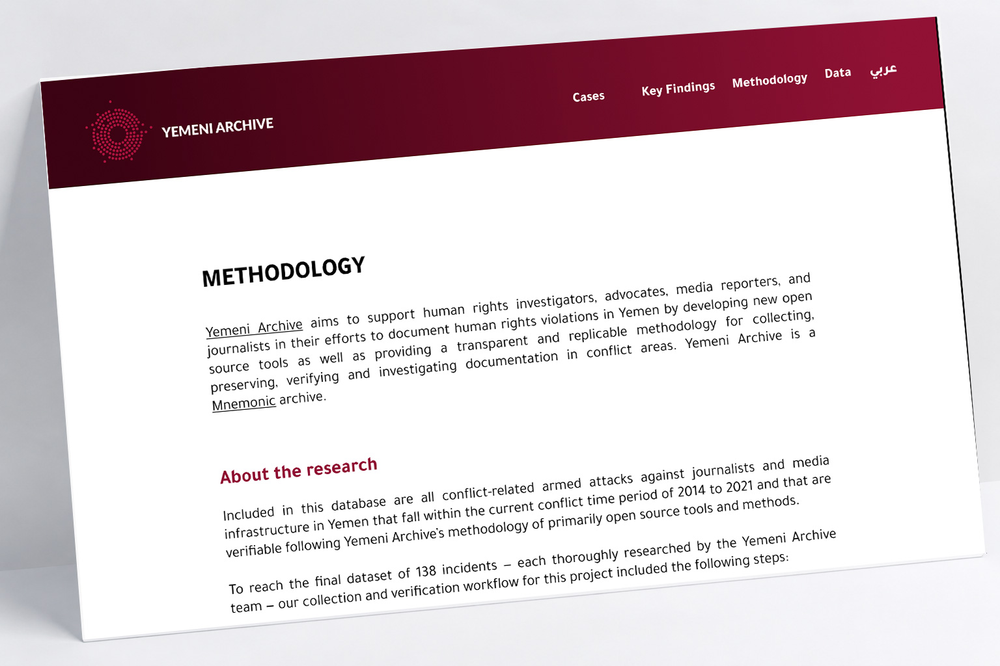
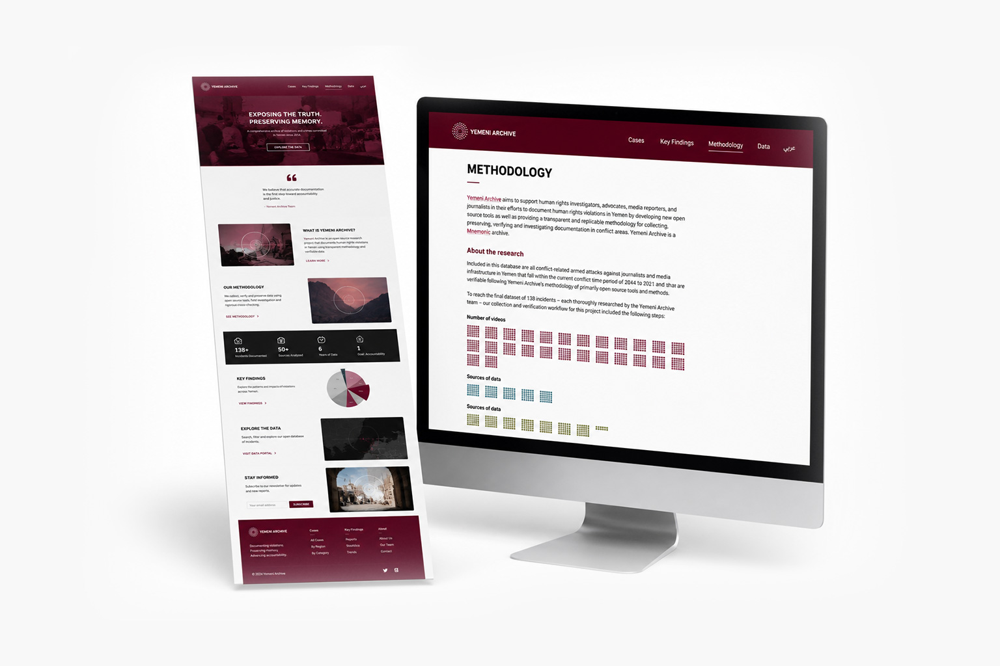
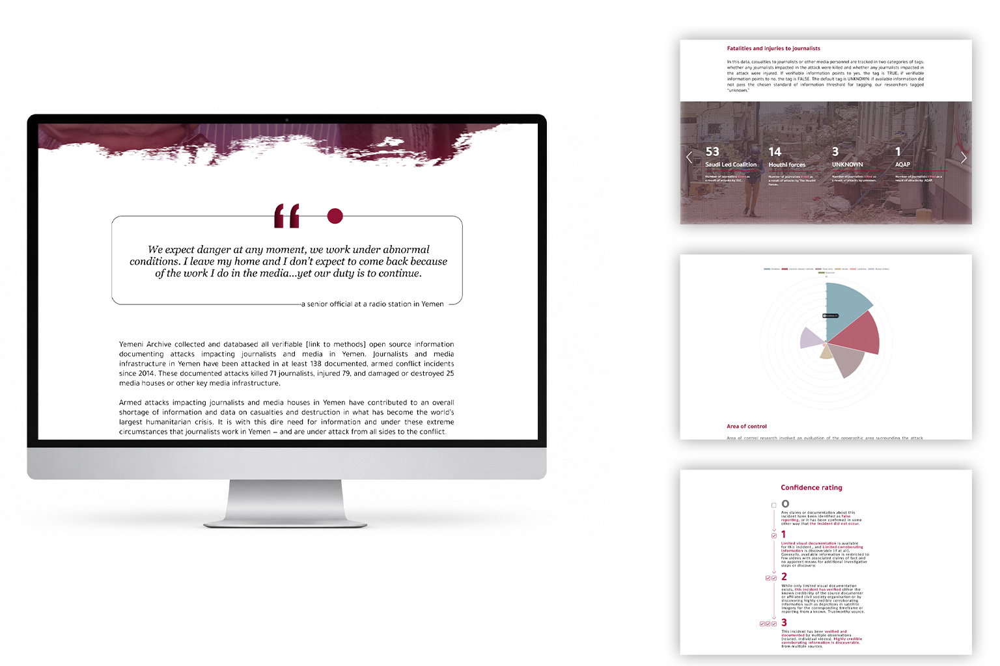
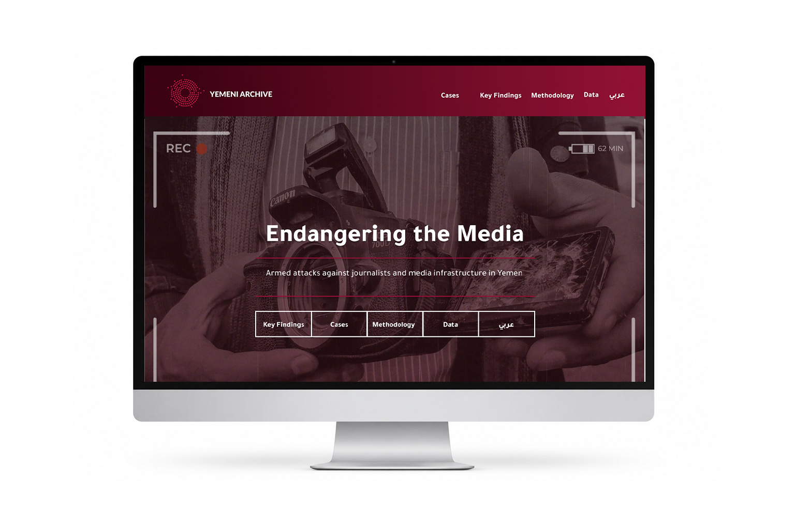

Website project · 2023
Yemeni Archive
A digital archive showcasing the rich cultural heritage of Yemen through interactive data visualization.
Role
UX/UI Designer
Platform
Website
Focus
UX Research · Wireframing · Visual Design · Responsive Design · Design System · Prototyping
Tools
Figma · Illustrator · Photoshop · Video Editing

The Solution
I created a clean editorial interface that combines long-form content, data visualizations, and intuitive navigation to help researchers, journalists, and the public access information efficiently.


Outcome
TThe final design transforms extensive research into a structured and engaging digital experience, making complex information easier to discover, understand, and navigate.

Next project